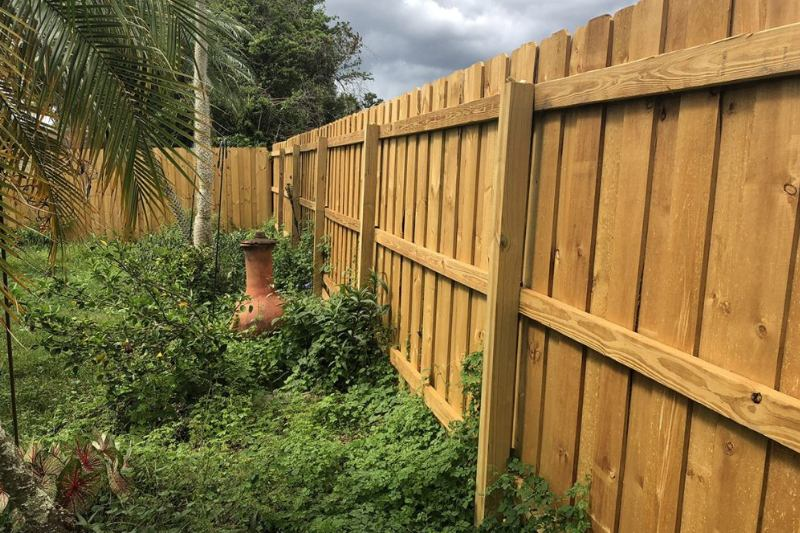
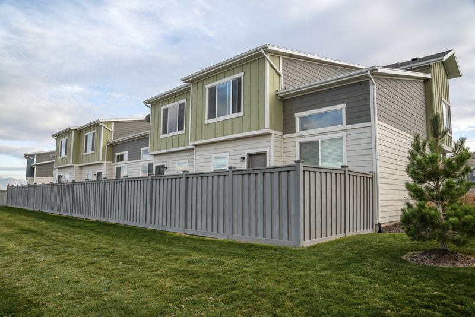
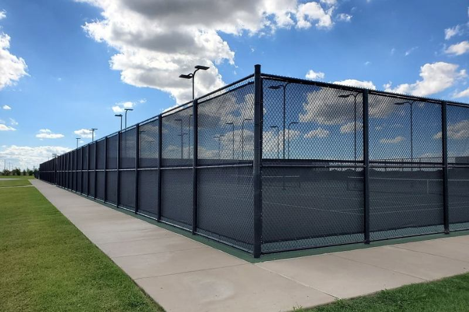
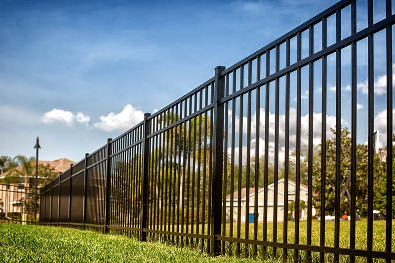
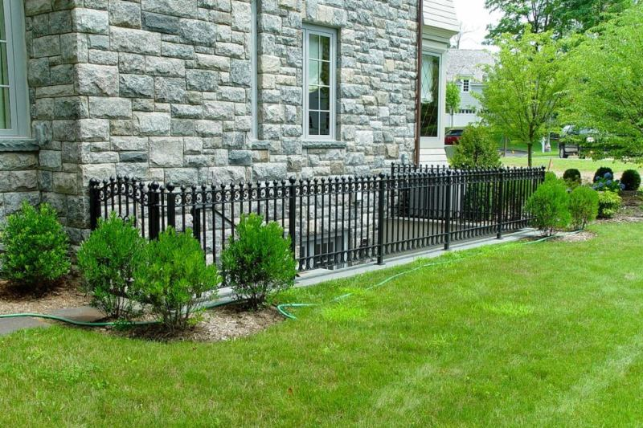
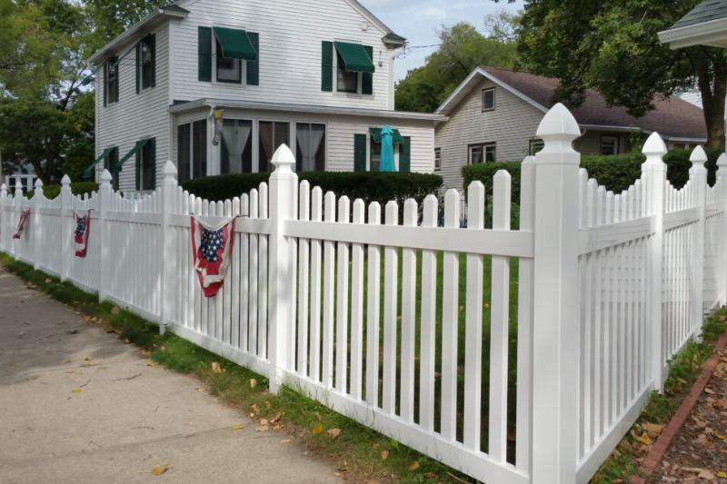
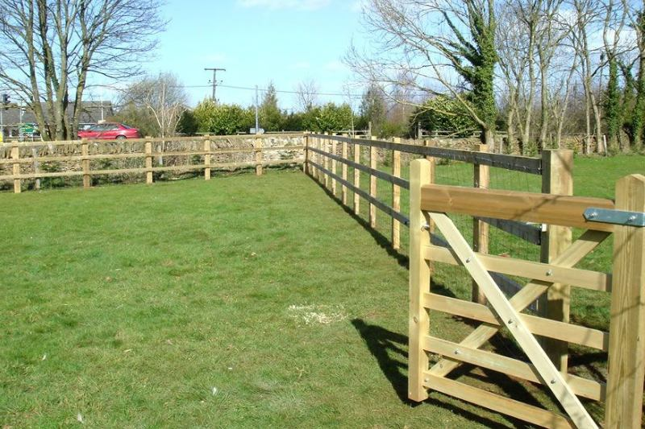
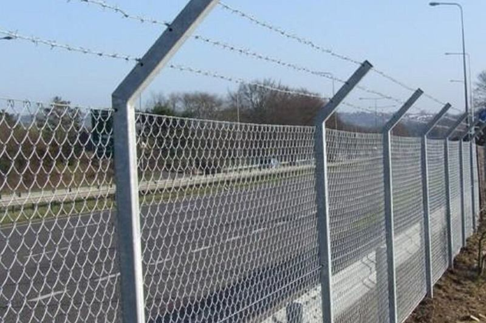
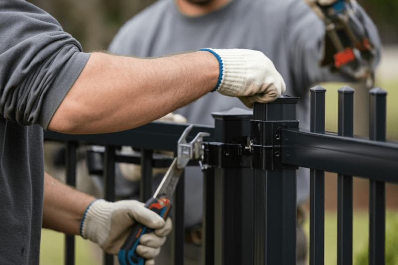

Workmanship that fits the ground
Caliche, rock, slope, and wind change how deep posts go and how a line is laid out. We plan for the lot instead of using one standard layout.
Albuquerque, New Mexico
Albuquerque Fence Company builds and repairs fences for homes, acreage, and commercial lots in Albuquerque, NM and the towns around it. We install wood, vinyl, aluminum, chain link, and steel fences, along with gates, picket fences, farm fencing, and repairs. Every estimate starts with the property itself, because wind on the West Mesa, caliche in the soil, and HOA rules change what a fence should be. You get a plain answer on whether the job is a repair, a replacement, or a different material than you first had in mind. Use the quote form on this page or call (505) 210-9903 to describe the lot. Request your free quote today and we will follow up about the next step.
Tell us the city, the material, and roughly how much fence. We use this to call you back about the job.
A fence is a long-term purchase, so we focus on the parts that decide whether it holds up.
Caliche, rock, slope, and wind change how deep posts go and how a line is laid out. We plan for the lot instead of using one standard layout.
You get a straight answer on whether the job is a repair, a replacement, or a different material. We explain the options before the estimate is final.
A backyard screen, a horse lot, a front-yard picket, and a storage yard are different fences. We match wood, vinyl, aluminum, chain link, or steel to what the fence has to do.
Price depends on footage, height, gates, and ground conditions. We quote from the actual property rather than a catalog price.
Start with the job, then the material. Select a service to see how it works, what changes the price, and which towns it fits.

Privacy, shadowbox, and rail fences in cedar or pine for yards that need a screen.
Details
Privacy and picket panels that hold their color in the sun and skip the yearly stain.
Details
Galvanized and coated chain link for yards, dogs, and sites that need a practical line.
Details
Open ornamental fence that sheds the wind, keeps a clean line, and needs no stain.
Details
Steel and iron for frontages and gates that need more strength than a light panel.
Details
Shorter wood or vinyl pickets that mark a front yard without a solid privacy wall.
Details
Rail, wire, and pipe fencing for horses and livestock on acreage around the valley.
Details
Heavier chain link and vehicle gates for yards and sites that are not a backyard.
Details
Walk and drive gates hung on posts and hardware sized for the leaf and the wind.
DetailsPosts, panels, and gates put back in line when the rest of the fence is still sound.
DetailsRepresentative photos of the fence styles we install. These images illustrate each style and are not a record of our completed jobs.
We have not published customer reviews on this website yet, and we will not invent them. Verified reviews will be added here once customers have given permission to share them.
If you would like to know more about how we work before you decide, call (505) 210-9903 and ask your questions, or send the quote form.
Four simple steps from the first call to a finished fence.
Use the form or call (505) 210-9903 with your city, the material you have in mind, and roughly how much fence you need.
We talk through the goal, the gates, the ground, and any HOA or permit rules, and arrange an on-site evaluation when it is needed.
You get an estimate built from the footage, height, material, gates, and ground conditions of the property.
Once you approve the estimate, we schedule the work and plan the timeline around materials and site conditions.
We schedule fence work in Albuquerque and nearby communities. Rules, soil, and lot size change from one town to the next.
The price follows the footage, the material, the gates, and the ground. A flat dirt backyard and a rocky, sloped lot with a drive gate are not the same job, so we do not publish one per-foot rate. Caliche and an old fence that has to come out change the quote again. Call (505) 210-9903 or send the form and we will price the line you actually have.
Yes. A lot of Albuquerque yards are caliche, and foothill lots in Placitas, Tijeras, and Cedar Crest are rock. The holes take longer, and the quote includes that labor instead of assuming a shovel will do it. Post depth still has to suit the fence and the wind. We do not set a tall privacy fence in a shallow hole because the digging was difficult.
Yes. Wood, vinyl, chain link, aluminum, steel and iron, picket, and farm fencing are separate services, plus gates, commercial work, and repair. They solve different problems. A horse lot, a front-yard picket, and a storage yard should not be forced onto the same product. The service pages describe where each one fits.
In the city, a new wall or fence needs a permit. The city’s published guidance sends fences under six feet through the zoning counter and taller fences through Building Safety. Front-yard fences are generally held to about three feet unless a variance is approved, and corner lots can be stricter. Rio Rancho, the villages, and the counties use their own rules, so the address decides the path.
We repair it when the posts are still sound. Blown panels, snapped rails, and a gate that racked in the wind are repair work. If the posts pulled out or the line left its original path, replacement is the honest fix. Spring wind on open West Side and mesa lots is the usual cause. We look at the posts before we recommend either one.
It depends on the footage, the material, the ground, and how soon materials arrive. A short residential run can go faster than a long acreage line or a site with rock. We talk through the schedule after the on-site evaluation and the estimate, and we do not promise a date before we have seen the property.
Wood needs a sealer or stain on a regular schedule, and loose boards or leaning posts should be fixed early. Vinyl and aluminum mostly need an occasional wash and a check of the hardware. Chain link and metal fences do best when chips in the coating are touched up and gates are kept lubricated and aligned.
Call (505) 210-9903 or send the lot details through the quote form. We will tell you if the job is a repair, a replacement, or a different material than you started with.